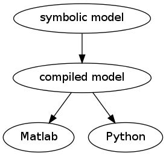

hoho
ouhou !

This function will apply a Hodrick-Prescott filter to a dataset. The return value is the filtered data-set found according to:
- min sum((X[t] - T[t])**2 + lamb*((T[t+1] - T[t]) - (T[t] - T[t-1]))**2)
- T t
T = Lambda**-1 * Y
| Parameters : | data: array, dtype=float :
|
|---|---|
| Returns : | T: array, dtype=float :
|
Notes
This function implements sparse methods to be efficient enough to handle very large data sets.